Balık, meze ve rakının şehirdeki adresi
Marmara’nın taze balığı, ustalıkla hazırlanan mezeler ve uzun sohbetlerin eşlik ettiği bir sofra. Şehir Restaurant, Bandırma’nın kalbinde, akşamları dostlarla buluşmanın en güzel adresi olmak için kuruldu.
Mevsimin getirdiğini sofraya taşıyor; rakıdan şaraba geniş seçkimizle her akşamı bir kutlamaya dönüştürüyoruz.
Rezervasyon ve özel günleriniz için bize telefonla ya da WhatsApp üzerinden ulaşabilirsiniz.
Hacıyusuf Mah. Cumhuriyet Cad. No: 49
Bandırma / Balıkesir
Güncel çalışma saatleri için
bizi arayın
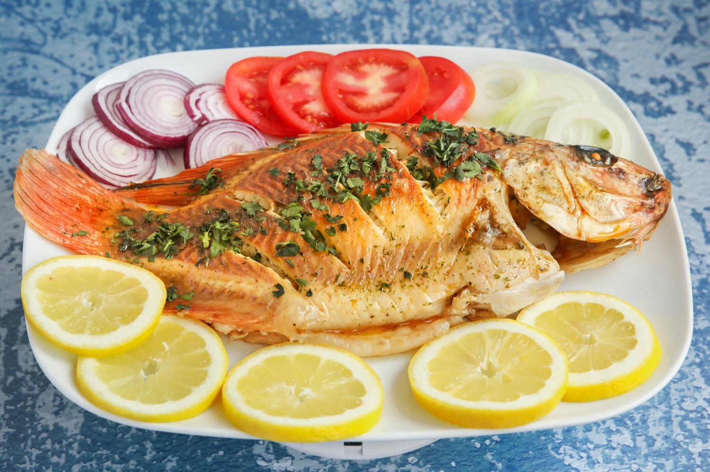
Sabah tezgâha gelen balık, ızgarada, buğulamada ya da fırında; yanında roka, kırmızı soğan ve limonla. Günün seçeneklerini garsonumuz masanızda anlatır.
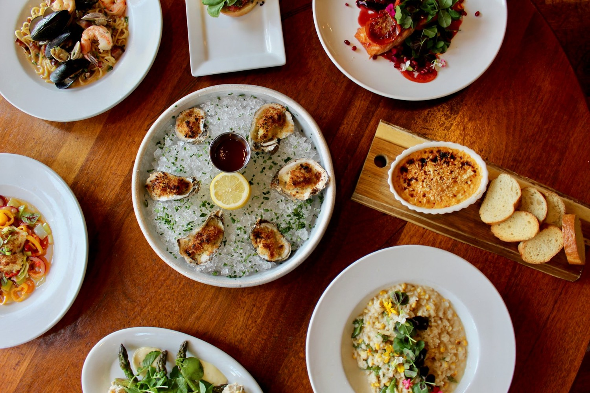
Rakı sofrasının vazgeçilmezi soğuk ve sıcak mezeler, her gün taze hazırlanır.
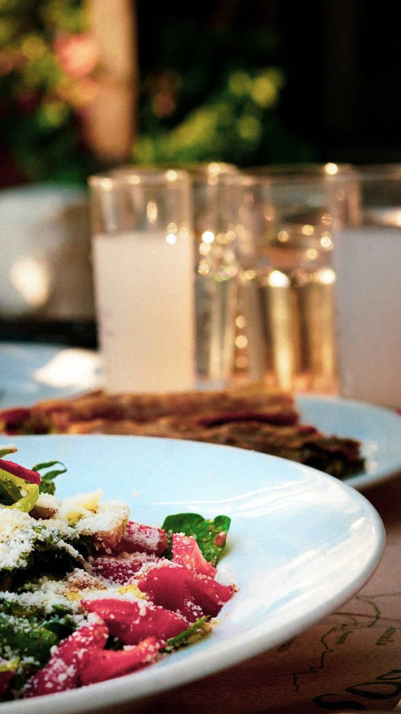
Otuzu aşkın rakı çeşidi; Türkiye’nin ve dünyanın bağlarından kırmızı, beyaz, roze ve köpüklü şaraplar. Kadeh ya da şişe, tercih sizin.
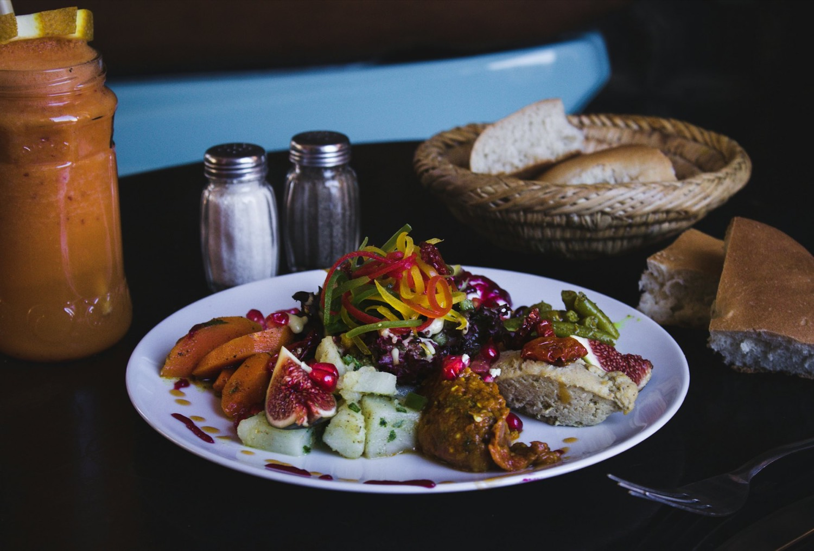
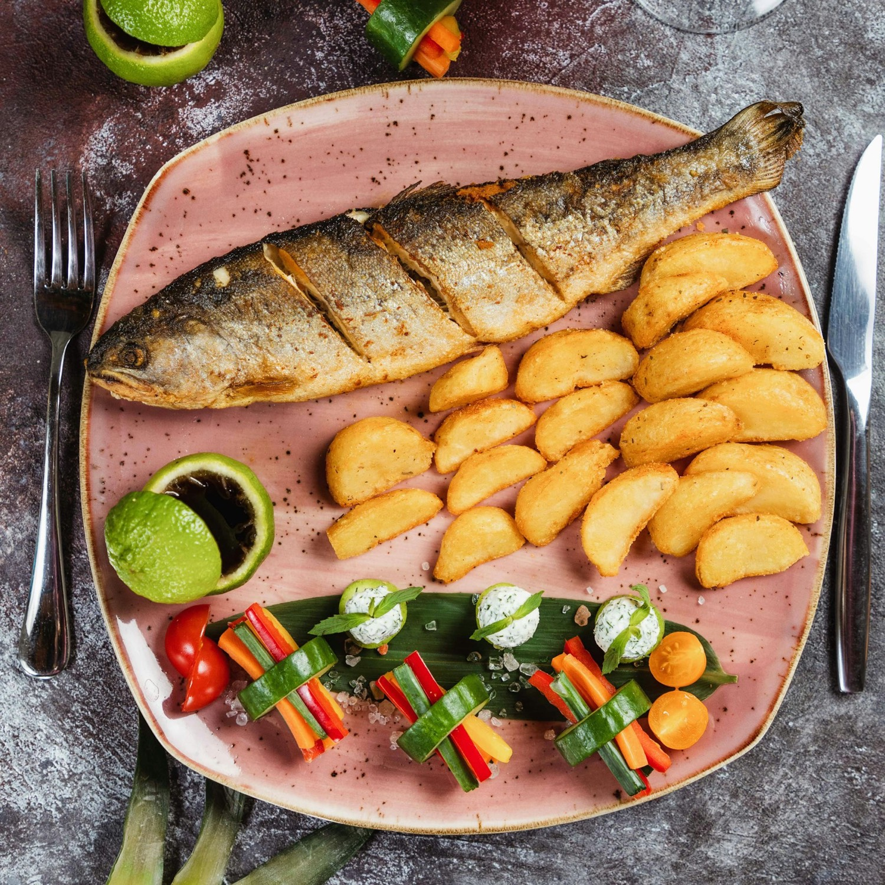
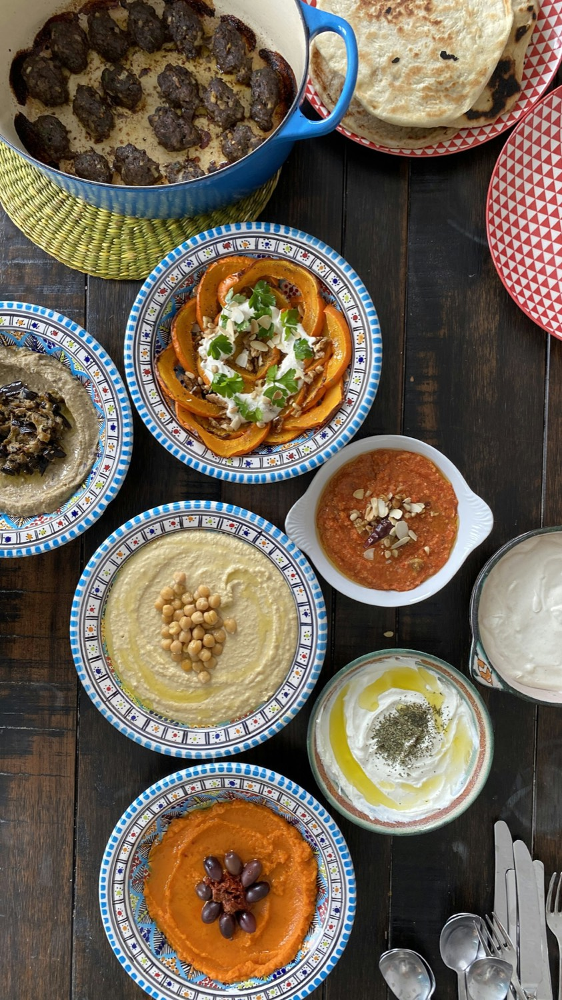
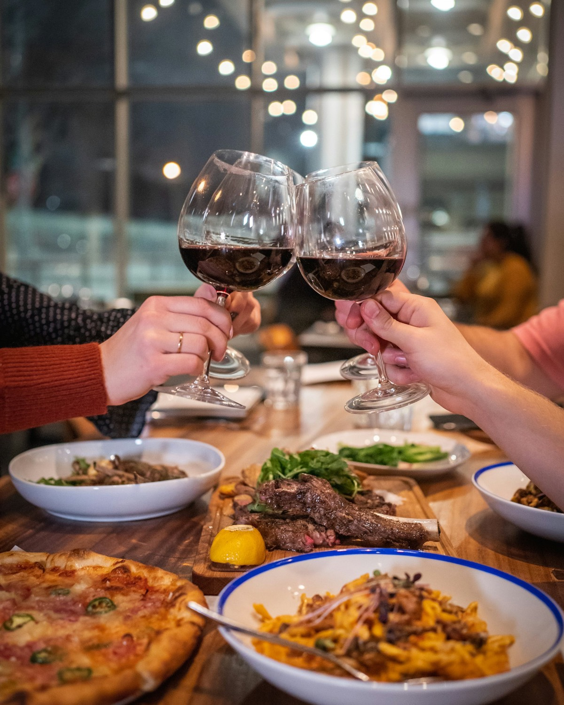
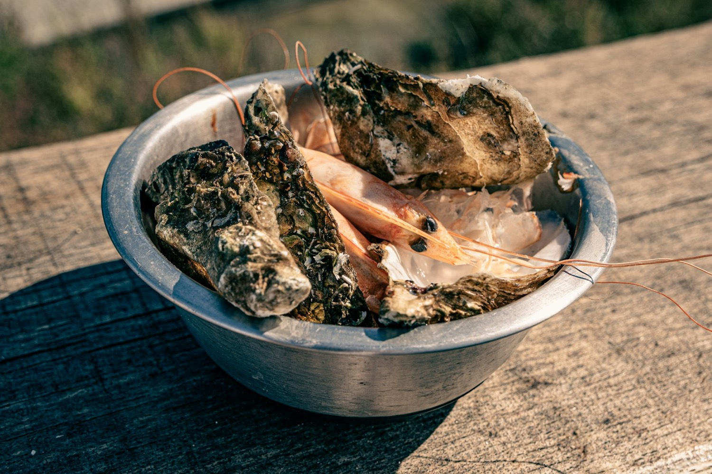
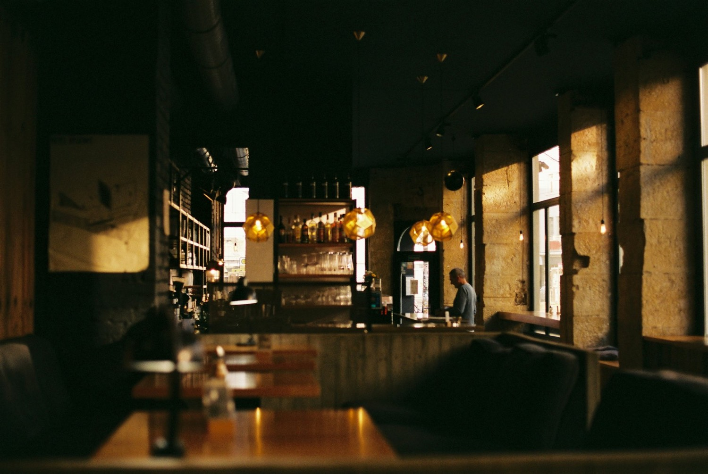
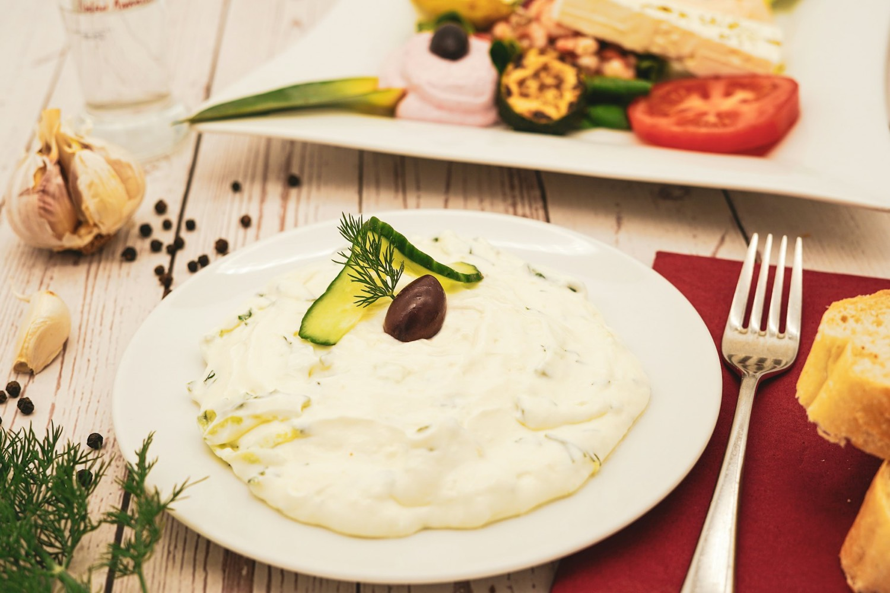
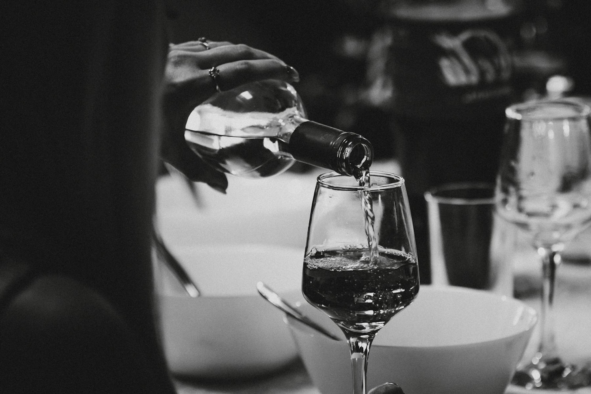
Doğum günleri, nişan yemekleri, iş davetleri… Kalabalık masalarınız ve özel menü talepleriniz için bizimle önceden iletişime geçin; akşamınızı birlikte planlayalım.